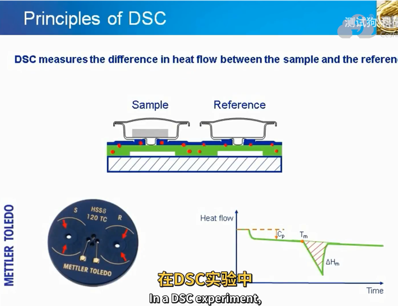
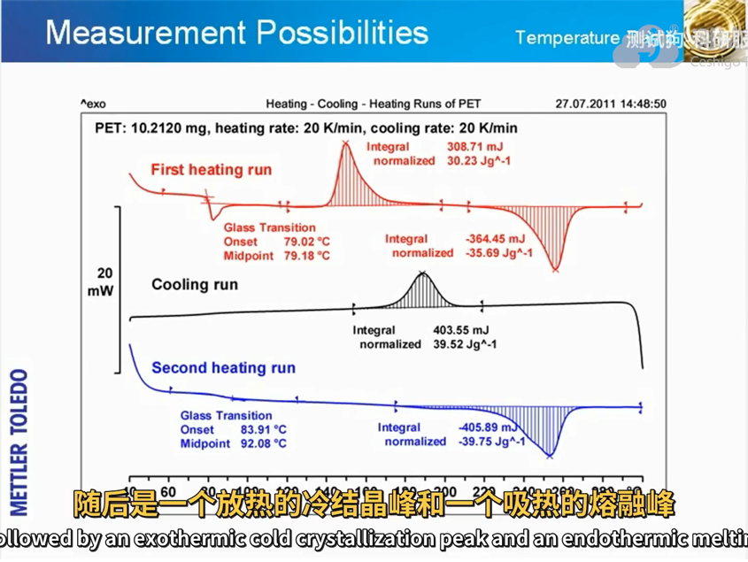
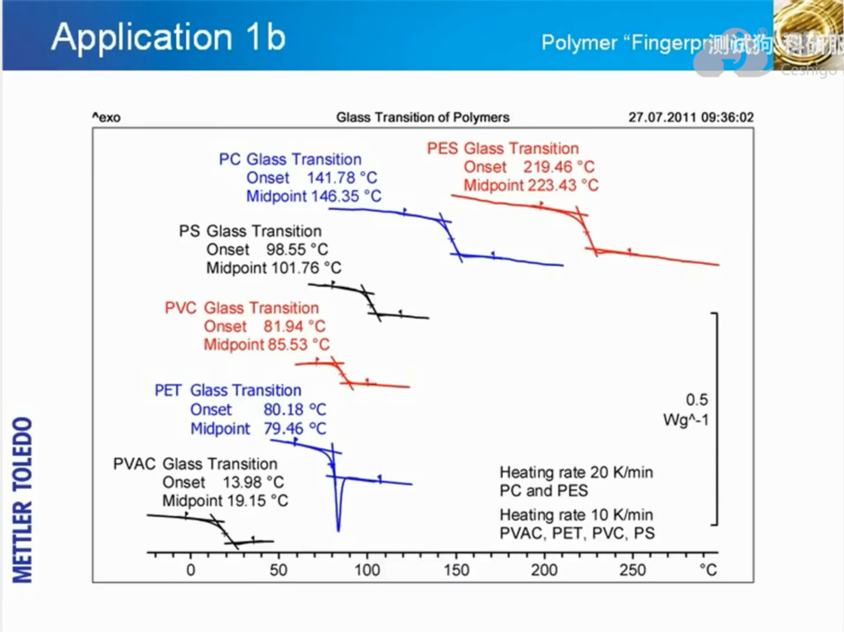
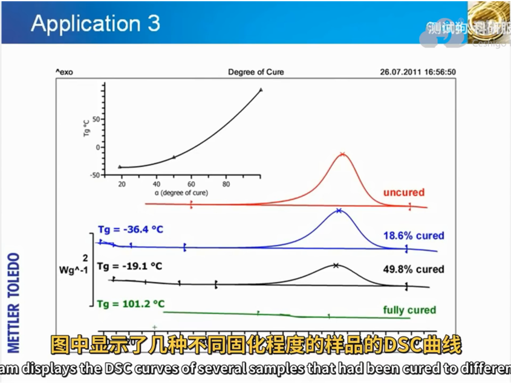

文档目的
复合材料加工过程至少涉及热学-化学-机械三种物理场的耦合作用, 其中, 热学的场方程遵循 Fourier 传热定律, 而化学和机械的场方程形式依赖于材料的类型. 例如热固性材料的化学场方程需要考虑材料的固化程度, 而热塑性材料则需要考虑其结晶度. 对于碳纤维增强的基体材料, 基体和纤维可能都需要考虑损伤本构模型, 基体材料可能还需要加入黏弹性本构模型.
故本文档旨在整理复合材料除力学本构模型之外的物理场模型.
热力学模型
热传导模型就是经典的 Fourier 方程:
$$
\rho C_p \frac{\partial T}{\partial t} = \nabla(\boldsymbol{k} \nabla T) + q_{gen}
\label{eq:transient}
$$
不同类型的材料, 热源项产生的原因不同. 热固性材料放热是因为固化过程中的交联反应放热; 热塑性材料是因为降温过程中材料结晶放热. 式$\eqref{eq:transient}$中热源项可以表示成如下形式:
$$
q_{gen} = (1 - V_f) \rho_r H_{tr} R_{r}(\psi, T)
\label{eq:heat_source}
$$
其中, $H_{tr}$ 是总反应热, $\psi$ 表示材料固化或结晶化程度.
化学反应模型
在介绍化学反应模型之前, 先引入一些化学反应中常用的术语和概念.
一些术语
玻璃化转变温度
the cured glass transition temperature ($T_g$) of a polymeric material is the temperature at which it changes from a rigid, glassy solid into a softer, semiflexible material.
需要强调的是, $T_{g}$ 是热固性材料特有的属性, 在此时聚合物的结构仍然完整, 但交联不再锁定在固定的位置. $T_{g}$ 一般低于熔化温度 $T_{m}$ .
$T_{g}$ 会使材料力学性质明显降低, 因此 $T_{g}$ 决定了复合材料或胶粘剂的使用温度上限.
影响 $T_{g}$ 的因素包括但不限于: 材料的吸湿量和固化程度等. 大多数热固性聚合物吸湿后 $T_{g}$ 会严重降低. 材料的 $T_{g}$ 会随着固化程度增加而上升, 如图所示.
测定复合材料 $T_{g}$ 需要用到热分析技术, 例如示差量热扫描法(DSC), 这将在下文进行介绍.
示差量热扫描法 (DSC)
Differential scanning calorimetry (DSC) is the most widely used method for obtaining the degree of cure and reaction rate. It is based on the measurement of the differential voltage, converted into heat flow in a calorimeter, necessary to obtain thermal equilibrium between the resin sample and an inert reference. A small sample of resin is placed in a sealed packet and then inserted into the calorimeter heating chamber along with a known standard of material. The
temperature is increased and the amount of heat given off (exothermic) or taken in (endothermic) is compared to a known standard
典型的DSC测试装置示意图如下, 右下角表明DSC可以测量材料的比热容, 熔点以及熔化过程中的焓变等热力学属性.

DSC测量热固性材料熔化及冷却曲线图如下

DSC测量不同材料的玻璃化转变温度如图所示. 由图可见, 在玻璃化转变温度附近, 测试曲线会有一个阶梯状的变化.

下图使DSC测量材料固化程度对玻璃化转变温度的影响.

热固性材料固化模型
首先定义用来描述热固性材料固化程度的标量 $\alpha$ . 若材料固化反应放出的总热量为 $H_{tr}$ , 在某一时刻因固化反应放出的热量为 $H(t)$ , 则材料固化程度 $\alpha$ 可以定义为
$$
\alpha = \frac{H(t)}{H_{tr}}
\label{eq:degree_of_curing}
$$
热源项 $\eqref{eq:heat_source}$ 中 $R_{r}(\alpha, T)$ 的函数关系受 $\alpha$ 影响. 大多数固化动力学模型采用阿伦尼乌斯公式如下
$$
R_{r}(\alpha, T)=\frac{d \alpha}{d t}=A_{0} \exp \left(\frac{-E_{a}}{R T}\right) \alpha^{m}(1-\alpha)^{n}
$$
对于不同固化程度下的玻璃化转变温度 $T_{g}$ , 可以由以下公式得到:
$$
\frac{T_{g}-T_{g 0}}{T_{g \infty}-T_{g 0}}=\frac{\lambda \alpha}{1-(1-\lambda) \alpha}
$$
式中, $T_{g0}$ 和 $T_{g \infty}$ 分别为未固化和完全固化状态下的玻璃化转变温度, $\lambda$ 为常数.